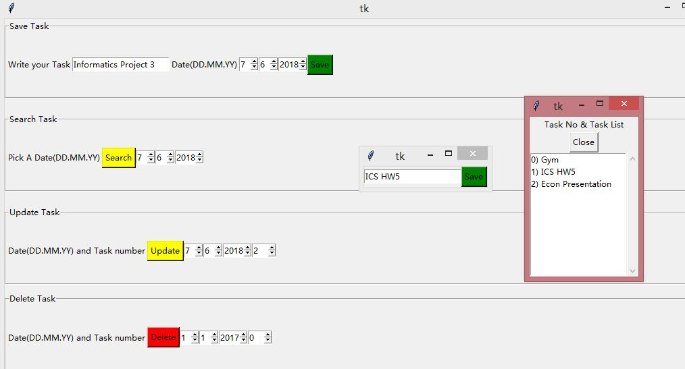

As a big believer of planners, I created my own task scheduler to keep track of my daily tasks. I wanted the function to display and edit tasks at a given date so I could input a desired date and view my agenda.
This task scheduler displays a user interface that asks the user to input task name and date to be stored at the given date. The user is able to look up a date and see all the corresponding tasks, and the user is also able to edit a task at will. Finally, there is an option to delete a task given the task number and date. This project taught me how to save, update, and essentially, manipulate lists of tasks in a file and display them on a graphical user interface.